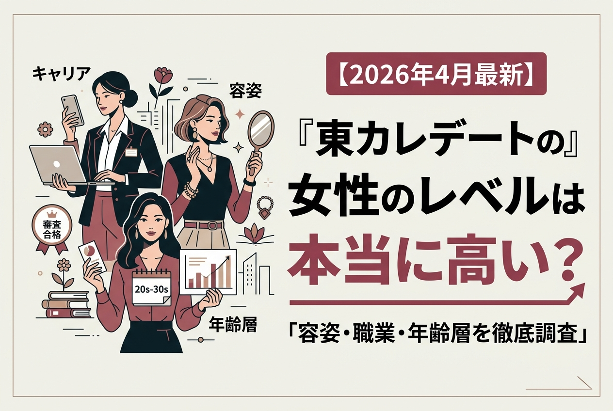
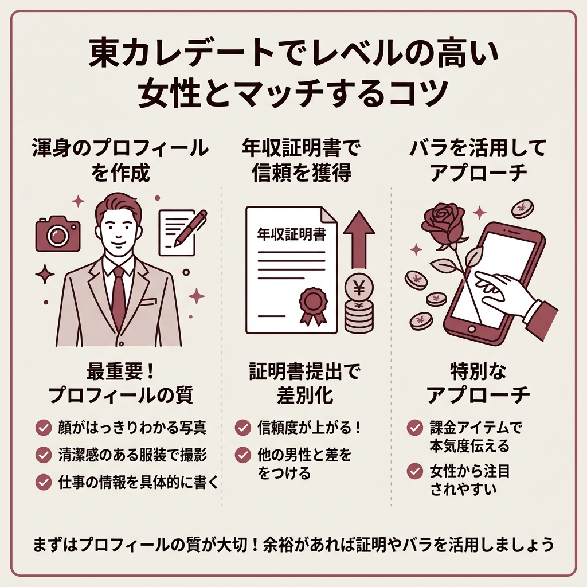
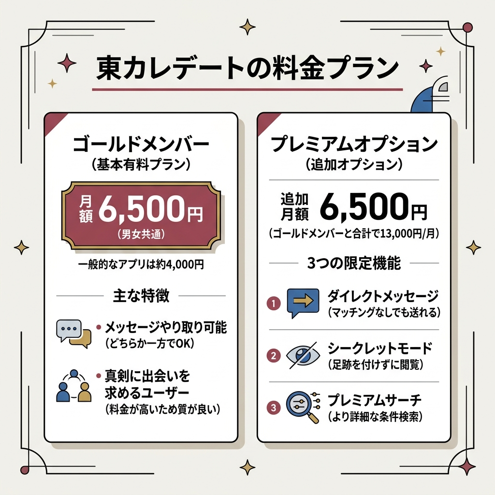

東カレデートの女性のレベルは本当に高い？容姿・職業・年齢層を徹底調査【2026年4月最新】

「東カレデートの女性って、本当にレベル高いの？」
マッチングアプリ選びで気になるのは、やっぱり登録している会員の質。
この記事では、東カレデートの女性会員のレベルを容姿・職業・年齢層のデータと口コミから徹底的に調査しました。
東カレデートって本当に美人が多いの？他のアプリと何が違うんだろう。
審査制で会員を厳選しているので、容姿・職業ともにハイレベルな女性がそろっています。詳しく解説しますね。
審査の仕組みからマッチするコツ、料金、注意点まで、東カレデートを検討している男性が知りたい情報をまるっとまとめています。
結論：東カレデートの女性のレベルはかなり高い
 出典: highspec.heteml.net
出典: highspec.heteml.net先に結論をお伝えすると、東カレデートの女性のレベルは他のマッチングアプリと比較してかなり高いです。
単に「顔がかわいい」というだけではありません。
雰囲気の洗練さ、職業、学歴まで含めて、全体的にハイレベルな女性が集まっているのが東カレデートの特徴です。
美人も可愛い系もそろっている
モデル体型で大人っぽい雰囲気の女性もいれば、アイドル顔の可愛い系もいる。
口コミを調べていて驚いたのが、「系統を問わず美人が多い」という声の多さでした。
好みのタイプが絞られている人でも、東カレデートなら相性の合う女性を見つけやすいといえます。
CAやモデルなど華やかな職業が多い
客室乗務員、モデル、アナウンサー、美容看護師——。
いわゆる「美意識が高い職業」の女性が多く登録しているのが、東カレデートの大きな特徴です。
口コミでは「JALの国際線CAの女性とマッチした」「SNSで有名な子がいた」という声もあり、一般のアプリとは明らかに層が違います。
高学歴・キャリア女性も目立つ
容姿だけでなく、学歴やキャリアの面でもレベルが高い。
公式データによると、女性会員の出身大学トップ3は慶應義塾大学・早稲田大学・青山学院大学です。
大手企業や外資系、専門職に就いている女性も多く、「話していて知的な会話ができる」という口コミが目立ちます。
- 容姿端麗な女性が多い（審査制で担保）
- CA・モデル・看護師など華やかな職業の女性が在籍
- 高学歴・キャリア女性が多く、知的な会話が楽しめる
- 上品な雰囲気の会員が多い
- 地方でも審査基準は同じなのでレベルが高い
東カレデートの女性のレベルが高い3つの理由
 出典: single-aiseki.com
出典: single-aiseki.com「たまたま美人が集まっている」わけではありません。
東カレデートの女性のレベルが高い背景には、明確な仕組みがあります。
完全審査制で通過率は約30%
東カレデートは完全審査制を導入しています。
登録するには、既存会員による審査と運営側の審査、2段階の審査を両方とも通過する必要があります。
その通過率はおよそ30%。
10人中7人は審査に落ちる計算なので、自然と会員の質は高くなります。
女性は「写真」重視で審査される
職業や学歴も審査項目にはあるものの、女性の合否を左右するのは結局「写真」です。
既存会員の過半数が合格を出さないと通過できないので、容姿レベルの高い女性しか残りません。
ハイスペ男性が集まるから女性のレベルも上がる
これは意外と見落とされがちなポイントです。
東カレデートは男性会員の43%が年収1,000万円超え、92%が大卒というハイスペック層ばかり。
「ハイスペックな男性がいるなら、私も登録してみよう」と考えるレベルの高い女性が自然と集まります。
男女ともに審査のハードルが高いからこそ、お互いにつり合うハイレベルな会員が集まる好循環が生まれているわけです。
なるほど、審査が厳しいから自然と女性のレベルが上がるんだね。
そのとおりです。男性側のスペックが高いことで、それに見合う女性が集まる構造になっています。
東カレデートの女性会員の年齢層・職業データ
東カレデートの公式サイトが公表しているデータから、女性会員の実態を見ていきましょう。
メインは20代後半〜30代前半で全体の65%
東カレデートの女性のメイン年齢層は、20代後半〜30代前半。
この層だけで全体の65%を占めています。
| 年齢層 | 割合 | 特徴 |
|---|---|---|
| 18〜24歳 | 11% | モデル・インフルエンサーが中心 |
| 25〜34歳 | 65% | メイン層。キャリア女性が多い |
| 35歳以上 | 24% | 落ち着いた大人の女性 |
18〜24歳は全体の11%。大学生の登録はゼロではないものの少数派です。
傾向としては、学生であってもモデルやインフルエンサーなど「魅せ方に慣れている」女性が多いようです。
出身大学は慶應・早稲田・青学がトップ3
出身大学のトップ3は慶應義塾大学、早稲田大学、青山学院大学。
ハイスペ男性と同じ価値観を持つ女性が自然と集まっている証拠です。
東カレデートの女性に関する口コミ・評判
 出典: matchmatch.jp
出典: matchmatch.jp実際に東カレデートを使った男性の口コミをまとめました。
とにかく容姿がずば抜けた女の子が多かったです。スタイルも良く、自分にも厳しく美容意識も高い子がほとんどで、モデルかな？と思うような子も結構いました。他のアプリでは、ここまで容姿のランクが高いというのはないので感動します。
口コミ調査より
全体的に「女性のレベルが高い」という声が圧倒的に多い一方で、「地方だとやや会員数が少ない」という声もあります。
都心部ほど選択肢は豊富ですが、地方でも審査基準は同じなので、マッチした女性のレベル自体は変わりません。

東カレデートでレベルの高い女性とマッチするコツ
せっかくレベルの高い女性がいても、マッチできなければ意味がありません。
ここからは、ハイレベルな女性とマッチ率を上げるための具体的なコツを紹介します。
年収証明書を提出して信頼度を上げる
東カレデートでは任意で年収証明書を提出できます。
プロフィールの年収は自己申告なので、証明書を出すだけで他の男性との差別化になります。
提出済みの会員には目立つマークが表示されるので、女性からの信頼度が上がり、マッチング率の向上が期待できます。
「バラ」を送って差別化する
通常の「いいね」は無料で送り放題。
一方で「バラ」は課金アイテムなので、送ること自体が特別なアプローチになります。
| コイン数 | 料金 |
|---|---|
| 100枚 | 1,100円 |
| 1,000枚 | 6,600円 |
| 5,000枚 | 22,000円 |
バラは1本1コインで送れます。
まとめ買いするほど1枚あたりの単価が安くなるので、本気で使うなら1,000枚以上がコスパ的にはおすすめです。
プロフィール写真と自己紹介文にこだわる
ここが一番重要かもしれません。
- 顔がはっきりわかる写真を1枚は設定する
- スーツ姿や清潔感のある服装で撮影する
- 明からさまな自撮りは避ける（タイマーやスタンド活用）
- サブ写真で趣味やライフスタイルを伝える
- 自己紹介文は仕事の情報を具体的に書く
写真は複数枚設定できますが、枚数を増やせば通過率が上がるわけではありません。
むしろ渾身の1枚に絞るほうが粗探しされにくく、好印象を与えやすいです。
レベルの高い女性とマッチするには、やっぱりお金をかけないとダメ？
お金よりもまずプロフィールの質が大切です。年収証明やバラは余裕があれば活用する、くらいのスタンスでOKですよ。

東カレデートの料金プラン
料金は気になるところ。東カレデートの料金体系をまとめます。
ゴールドメンバーは月額6,500円
東カレデートの有料プラン「ゴールドメンバー」は男女ともに月額6,500円です。
一般的なマッチングアプリの月額4,000円前後と比べると高め。
ただ、その分真剣に出会いを求めるユーザーが集まりやすいというメリットがあります。
どちらか一方がゴールドメンバーであれば、メッセージのやり取りが可能です。
プレミアムオプションの機能
ゴールドメンバーとは別に「プレミアムオプション」（月額6,500円）も用意されています。
マッチングしていなくても相手にメッセージを送れる
足跡を付けずにプロフィールを閲覧できる
より細かい条件でユーザーを検索できる
特にダイレクトメッセージは、気になる女性に直接アプローチできるので強力です。
ただ、まずはゴールドメンバーだけで始めて、物足りなければ追加を検討する流れがよいでしょう。
東カレデートにサクラや業者はいる？
「審査制のアプリでもサクラっているの？」——気になる疑問に答えます。
お金を払うからには、サクラや業者がいないか心配…。
東カレデートは審査制+24時間監視体制なので、サクラはほぼいません。ただし業者のリスクはゼロではないので注意点をお伝えしますね。
結論として、東カレデートに運営側が用意した「サクラ」はほぼいないと考えてよいでしょう。
入会審査制に加え、24時間365日の監視体制と本人確認の徹底で安全対策を行っています。
すでに多くの女性会員が利用しているため、運営がサクラを用意する必要性も低いです。
また、パパ活目的で利用している女性や、既婚者が紛れている可能性もゼロではありません。
独身証明を提出しているユーザーを優先してやり取りするのが安全です。
東カレデートの審査に通過するコツ

東カレデート1週間！驚愕の〇〇〇人マッチ！何人とデートできるのか
「そもそも自分が審査に通るか不安」という方のために、通過率を上げるコツを整理しました。
写真の選び方
審査で最も重視されるのが写真です。
渾身の1枚を設定するのがベスト。枚数を増やすと粗探しの対象になります。
男性はスーツにネクタイが好印象。東カレのコンセプトに沿った「上品さ」を意識しましょう。
サブ写真には高級レストランや旅行先など、ライフスタイルが伝わるものを設定すると効果的です。
過度な加工やサングラスで顔を隠すのはNG。
「清潔感」と「東カレらしい上品さ」の2つを意識すれば、審査通過の可能性はぐっと上がります。
自己紹介文の書き方
自己紹介文も審査結果に影響します。
- 冒頭と末尾に挨拶を入れる
- 仕事の情報は他アプリよりも具体的に書く
- 自慢やマイナス表現は避ける
- デートにつながる話題（好きな料理やお店のジャンル）を入れる
- 丁寧な言葉遣いを心がける
ポイントは「自分をアピールしすぎない」こと。
必要な情報を簡潔に、品のある文体で書くのが東カレデートの空気感に合っています。
東カレデートに関するよくある質問
まとめ
東カレデートの女性のレベルは、口コミとデータの両面から見てかなり高いです。
- 完全審査制（通過率約30%）で容姿端麗な女性が集まる
- CA・モデル・看護師など華やかな職業の会員が多い
- 女性の65%が20代後半〜30代前半
- 出身大学トップ3は慶應・早稲田・青学
- マッチ率を上げるなら年収証明の提出とプロフィールの質が重要
- 月額6,500円と相場よりは高いが、会員の質で十分ペイする
料金は安くないけど、「量より質」で出会いたいなら選ぶ価値のあるアプリです。